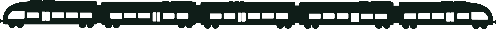
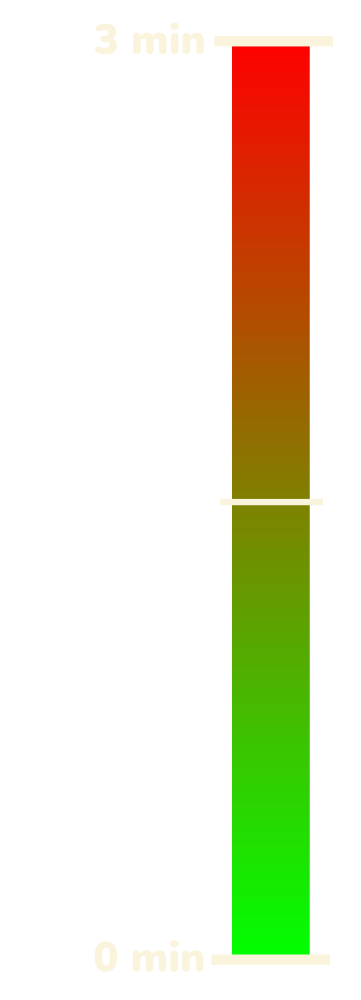
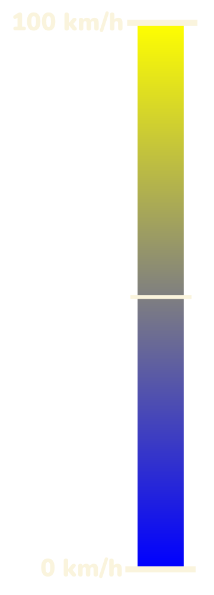

Website published on the 26th of May 2023 and maintained by
Dafne Culha,
Ozan Güven and
Arnaud Poletto
The Swiss Transportation System
![Cloud 1]()
![Cloud 2]()
![Cloud 3]()

Welcome aboard! You're about to embark on a fascinating journey through the intricate web of Swiss transportation, a system so well-oiled, it's like the inner workings of a Swiss watch - and just as precise. Picture this: nestled in the heart of Europe, surrounded by majestic mountains and serene lakes, lies a land where trains run like clockwork, buses reach the most remote alpine villages, and even the boats are punctual. Welcome to Switzerland, where getting from A to B is never a hassle, but an experience.
Imagine a country where the public transit system is as diverse as its landscapes. The Swiss Federal Railways, with their unrivaled punctuality, are the lifeblood of the system, threading through bustling cities, quaint towns, and pastoral countryside alike. Then there are the iconic yellow PostBuses, bravely navigating through winding mountainous roads, reaching corners of Switzerland that even the Swiss might not know existed. Cities each have their own transportation networks, complete with trams and buses, while boats glide seamlessly across shimmering lakes. And let's not forget the cable cars and funiculars, whisking you up to dizzying heights where the air is crisp, and the views, breathtaking.
But the pièce de résistance? It's the integrated ticketing system, a marvel of Swiss efficiency. With just one ticket, you can hop from a train to a bus, onto a boat, and then ascend a mountain in a cable car. It's like having an all-access pass to an amusement park, only this park is an entire country. And overseeing this magical ride is the Swiss Federal Office of Transport, the unsung heroes ensuring your journey is as smooth as Swiss chocolate. So buckle up, it's time to explore the Swiss transportation system, where every journey is a story in itself.
Mobility Mosaic
Feast your eyes on our first visualization - a circle packing chart, beautifully unravels the Swiss transportation tapestry, showcasing not just the various modes of transport but also their distinctive types.
Picture a universe of circles where each major mode - buses, trains, trams, metros, rack railways, boats - is a solar system in itself, each hosting its own set of planets representing different types within the category.
The train system, for instance, isn't just a single circle, but a constellation of circles representing intercity trains, regional trains, and more.
Through this visualization, we delve deeper into the Swiss transportation universe, revealing the layers and complexities of each mode. It's not just about buses or trains; it's about the intricate network within each mode that together makes Swiss transportation so efficient and comprehensive. This is the beauty of Swiss precision - and our circle packing chart captures it perfectly.
Click on each circle to zoom in and explore the different types of transportation.
Stop Insights
Introducing our latest feature - an interactive table that delves deep into the beating heart of Swiss transportation: the stops. This isn't just a table, it's a comprehensive dashboard that brings together key facets of the transport system. Here, you can sort by average delays, the number of trains, or even by the unfortunate but inevitable cancelled trips. When sorting, a responsive histogram magically appears, depicting the distribution of stops based on your selected feature. Witness how delays, train frequencies, and cancellations vary across the landscape of Swiss transportation, offering a unique glimpse into the workings of this complex system.
Swiss Nexus
Behold our third visualization - a mesmerizing hierarchical edge bundling that uncovers the hidden connections between Switzerland's diverse cantons. Picture a miniature map of the country, where each canton is but a click away. With a simple selection, watch as a vibrant, circular layout springs to life, unveiling the transport stops that stitch together the tapestry of Swiss mobility.
This captivating visualization highlights the intricate web of connections that unite different corners of Switzerland, fostering a sense of unity and cohesion. The myriad lines weaving through the circle, much like the threads of an artisan's loom, reveal the true extent of the country's interconnectedness, showcasing the vital role transportation plays in bridging the gaps between its urban hubs and remote hideaways.
Step into the shoes of a modern-day explorer, charting the unseen connections that bring the Swiss landscape to life. Through this visual masterpiece, discover the harmony that exists within the Swiss transportation system, and experience the joy of uncovering the ties that bind this small yet mighty nation together.
Connectivity Unveiled
Prepare to step into the nerve center of Swiss transportation with our next visualization - a captivating network that maps the intricate connections between transport stops. Picture an expansive, full-screen visual spectacle where each node is a stop, and each edge a lifeline connecting one stop to another. This is the essence of Swiss mobility, the invisible threads that keep the country moving, laid bare for you to explore.
This is more than a network - it's a dynamic, interactive playground where you can experiment with different layouts, bringing out the unique characteristics of Swiss transport. Choose to highlight features such as degree or betweenness centrality, and watch as the network transforms, revealing new facets of its complex architecture.
This visualization is your ticket to understanding the inner workings of a system that bridges the diverse landscapes of Switzerland. So take the reins, play around with the features, and watch as the network unfurls the hidden patterns within the Swiss transportation system. This is your journey into the heart of Swiss mobility. Buckle up!
Layout
Metric
You can choose between the different layouts of the graph: random, geographical or force atlas 2.
Mobility Rhythms
Welcome to our third visualization, a dynamic histogram that puts the pulse of Swiss transportation right at your fingertips. Picture an elegant graph, its X-axis charting the hours of the day, and its Y-axis representing the bustling frequency of chosen transport types. This is not just a graph, it's a day in the life of Swiss transportation, a rhythmic dance of mobility that never truly rests.
Choose your mode of transport and watch as the histogram springs to life. Observe how trains, buses, metros, and trams follow the ebb and flow of daily life, their frequencies peaking in the mornings and evenings - the hearty breakfast and dinner of Swiss mobility. These are the unsung heroes getting people to work and back home, a testament to the everyday reliability of the Swiss transport system.
Then, let's set sail with the boats and rack railways, which defy the typical trend. Their peak at 3pm, like a refreshing afternoon tea, reveals a more leisurely pace, a nod to the leisurely joyrides across serene lakes and breathtaking mountainscapes.
With this visualization, we invite you to witness the undulating rhythms of Swiss transportation, to see how each mode of transport dances to its own tune, yet harmonizes perfectly to form a symphony of mobility.
Time-Space Odyssey
Get ready to embark on a fascinating journey through time and space with our next visualization - an immersive, full-screen map that brings to life an average day in the Swiss transport system. Imagine watching the clock tick as trains crisscross the country, moving in real-time from one stop to another. This isn't just a map; it's a living, breathing simulation of Swiss mobility.
But there's more. This map doesn't just show trains moving; it breathes life into them. Define features such as delay or speed, and watch as the trains change color, each hue telling a different story of the journey. It's like watching the pulse of Swiss transportation beat across the country.
And for those who love a twist in the tale, there's the isochronic map feature. With a simple selection, watch as the map morphs, where distances no longer represent miles, but the time it takes to travel from A to B. It's a stunning deformation of space, bending the country to the will of time.
So step into this dynamic sandbox, where you can manipulate time, space, and the very fabric of Switzerland. Watch, explore, and play. This is more than a map. It's a window into the rhythms of Swiss transportation, unfolding before your eyes.
Train Coloring
Isochronic center

